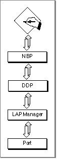
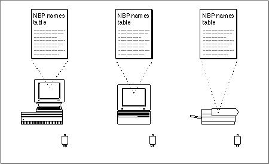

Legacy Document
Important: The information in this document is obsolete and should not be used for new development.
Important: The information in this document is obsolete and should not be used for new development.


About NBP
NBP allows you to bind a name to the internal storage address for your entity and register this mapping so that other entities can look it up. Applications can display NBP names to users and use addresses internally to locate entities. When you register your entity's name and address pair, NBP validates its uniqueness.An entity name consists of three fields: object, type, and zone. The value for each of these fields can be an alphanumeric string of up to 31 characters. The entity name is not case sensitive. You specify the value for the object and type fields.
The object field typically identifies the user of the system, or the system itself, in the case of a server. Applications commonly set this value to the owner name, which the user specifies through the Sharing Setup control panel.
The type field generally identifies the type of service that the entity provides, for example, "Mailbox" for an electronic mailbox on a server. Entities of the same type can find one another and identify potential partners by looking up addresses based on the type portion of the name alone.
The zone field identifies the zone to which the node belongs. You do not specify this value; when you register your process, you specify an asterisk (
*) for this field. NBP interprets the asterisk to mean the current zone or no zone, in the case of a simple network configuration not divided into zones.The mapping of names to addresses that NBP maintains is important for AppleTalk because the addressing numbers that AppleTalk uses are not fixed. AppleTalk assigns
an address dynamically to a node when the node first joins the network and whenever the node is rebooted. Because of this, the address of a node on an AppleTalk network
can change from time to time. Although a network number corresponds to a particular wire and the network number portion of an address is relatively stable, the socket number that is assigned to an entity is usually randomly generated. (For an overview
of AppleTalk addresses and the addressing scheme, see the chapter "Introduction to AppleTalk" in this book.) Although NBP is not a transport protocol, that is, you do not use it to send and receive data, NBP is a client of DDP. Figure 3-1 shows NBP and its underlying protocols.Figure 3-1 The Name-Binding Protocol and the underlying AppleTalk protocols

NBP provides network entities with access to current addresses of other entities. The name part of an NBP mapping is also important in identifying and locating an entity on the network. The NBP entity name is different from the application name. An application can display entity names to users and look up addresses based on names.
For example, an entity name can include a portion that identifies that entity type. An application can request NBP to return the names of all of the registered entities of a certain type, such as a particular type of game. The application can then display those entity names to a user to allow the user to select a partner. When the user selects
an entity name, the application can request NBP to return the address that is mapped to
the entity name.When you register your entity with NBP, it is made visible to other entities throughout the network. A network entity that is registered with NBP is referred to as a network-
visible entity. A mail server application is an example of a network-visible entity. When a mail server is registered with NBP, workstation clients with mailboxes can access the mail server program to send and receive mail.A server application might call NBP to register itself at initialization time so that its clients can access the server when they come online. However, a game application
might register itself when a user launches it so that partner applications of the same
type can locate it, then remove its entry from the NBP names directory when the user quits the application.You use the NBP routines to register your entity so that other entities can find it and
to retrieve the addresses of other entities with which you want to communicate. You specify an entity name that adheres to a defined format and register that name with
NBP in conjunction with the socket number that your entity uses. NBP then makes your entity's complete address available to other entities. To retrieve the address of another entity that is registered with NBP, you supply that entity's NBP name. You can retrieve the addresses of more than one entity by using wildcards instead of a fully qualified NBP name.Although you register your entity's NBP name in association with the socket that it uses, NBP maintains an entry that contains your entity's complete internet socket address. The internet socket address, also called the internet address, includes the socket number, the node ID, and the network number. All network-visible entities on an internet are socket clients, which means that each one is associated with a socket. Each socket has a unique number, and every entity has a unique internet socket address that identifies it. The socket number part of the internet address ensures that data intended for an entity is delivered to that particular entity.
The link-access protocol dynamically assigns a unique node ID to each node when it joins the network. When the user reboots the system, sometimes the same node ID is available and sometimes a new node ID is assigned. The network number is the number of the network to which the node is directly connected, and it remains the same as
long as the node is physically connected to that network. NBP fills in the node ID
and the network number in a names table entry. You don't supply these parts of the
internet address.NBP maintains a names table in each node that contains the name and internet address of each registered entity in that node. Each name and address pair is called a tuple. When you register your process with NBP, you provide a names table entry. NBP builds its names table on a node from the entries that entities supply.
The NBP routines include a procedure,
NPBSetNTE, that you can use to fill in a names table entry that is in the format that NBP expects. TheNPBSetNTEprocedure takes the name and the socket ID that you specify and builds a names table entry in the buffer that you provide. (For information on usingNPBSetNTE, see "Registering Your Entity With NBP" beginning on page 3-7.)To form a names table for a node, NBP connects together as a linked list the names table entries of all the registered entities on that node. The collection of names tables on all the nodes in an internet is known as the NBP names directory. Figure 3-2 shows a number of nodes on a network, each with its own names table; each names table contains an entry for each registered entity on its node.
Figure 3-2 The NBP names table on each node, collectively forming an NBP names directory

Whenever a node receives an NBP lookup request, NBP searches through its names table for a match and, if it finds a match, returns the information to the requester.